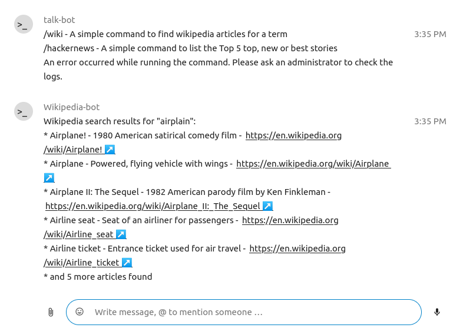
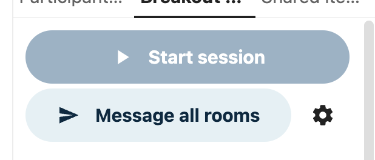

Pokročilé funkce Talk
Nextcloud Talk disponuje mnoha pokročilými funkcemi, které se uživatelům mohou hodit.
Matterbridge
Napojení na Matterbridge v Nextcloud Talk umožňuje vytvářet „mosty“ mezi konverzacemi v Talk a na ostatních chatovacích službách, jako je MS Teams, Discord, Matrix a dalších. Seznam podporovaných protokolů naleznete na GitHub stránce Matterbridge.
Moderátor může přidat Matterbridge napojení v nastavení daného chatu.

Každý z mostů má své vlastní potřeby ohledně nastavení. Informace pro většinu z nich jsou k dispozici na wiki stránkách Matterbridge, na které se dostanete přes volbu další informace z nabídky … . Nebo jděte na wiki přímo
Čekárna
Funkce čekárny umožňuje zobrazovat hostům čekací obrazovku, dokud hovor nezačne. To je ideální například pro webináře s účastníky zvenčí.

Je možné zvolit, že účastníkům umožníte se připojit do hovoru v konkrétní čas, nebo když čekárnu zavřete ručně.
Příkazy
Nextcloud umožňuje uživatelům vykonávat akce pomocí příkazů. Příkaz typicky vypadá jako:
/wiki letadla
Správci mohou nastavovat, zapínat a vypínat příkazy. Uživatelé mohou pomocí příkazu help (nápověda) zjišťovat, jaké příkazy jsou k dispozici.
/help

Další informace naleznete v dokumentaci pro správce Talk.
Talk ze Souborů
V aplikaci Soubory je možné v postranním panelu chatovat o souborech a dokonce si volat v průběhu jejich upravování. Nejprve je ale třeba se připojit do chatu.


Chatovat nebo volat s ostatními účastníky můžete i poté, co soubor začnete upravovat.

V Talk bude vytvořena konverzace pro soubor. Odtud je možné chatovat, nebo přejít zpět na soubor pomocí nabídky … vpravo nahoře.

Vytváření úkolů z chatu nebo sdílení úkolů v chatu
Pokud je nainstalovaný Deck, je možné použít nabídku … zprávy v chatu a vytvořit ze zprávy úkol v Deck.


Z Deck je možné sdílet úkoly do konverzace v chatu.


Breakout rooms
Breakout rooms allow you to divide a Nextcloud Talk call into smaller groups for more focused discussions. The moderator of the call can create multiple breakout rooms and assign participants to each room.
Configure breakout rooms
To create breakout rooms, you need to be a moderator in a group conversation. Click on the top-bar menu and click on „Setup breakout rooms“.

A dialog will open where you can specify the number of rooms you want to create and the participants assignment method. Here you’ll be presented with 3 options:
Automatically assign participants: Talk will automatically assign participants to the rooms.
Manually assign participants: You’ll go through a participants editor where you can assign participants to rooms.
Allow participants choose: Participants will be able to join breakout rooms themselves.

Manage breakout rooms
Once the breakout rooms are created, you will be able to see them in the sidebar.

From the sidebar header
Start and stop the breakout rooms: this will move all the users in the parent conversation to their respective breakout rooms.
Broadcast a message to all the rooms: this will send a message to all the rooms at the same time.
Make changes to the assigned participants: this will open the participants editor where you can change which participans are assigned to which breakout room. From this dialog it’s also possible to delete the breakout rooms.

From the breakout room element in the sidebar, you can also join a particular breakout room or send a message to a specific room.